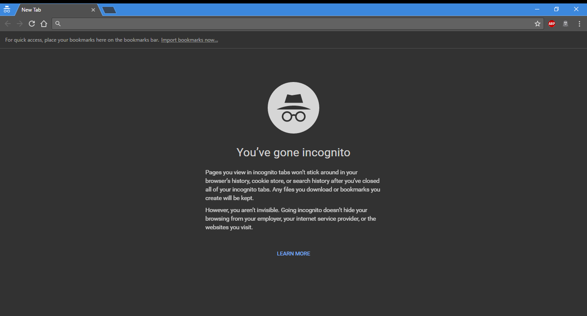
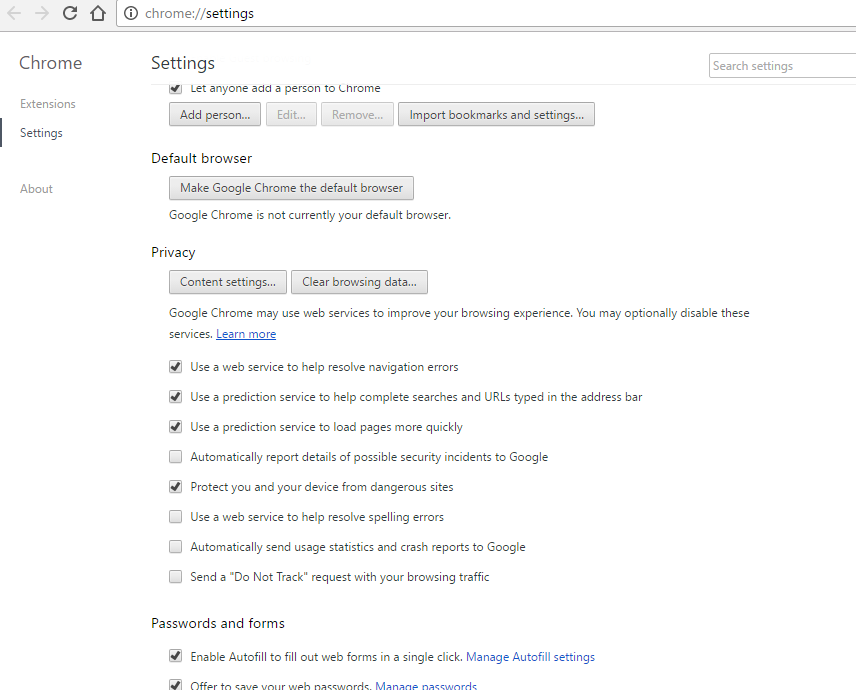

Incognito mode
Incognito mode is a private browsing feature that prevents the browser from permanetly storing any history inforamtion or cookies from the websites visited. He is similar to the private browsing feature in other web browsers. It doesn't prevent saving in all windows, only when you are using incognito window, wich means that you are in incognito mode when you are using incognito window. Private browsing is not meant to be completely anonymous on the Internet. As mentioned earlier, it is an easy and quick way to not log your browsing history or save (cache) any web pages, images, or cookies as you are browsing.
User tracking
Chrome sends details about its users to Google through both optional and non - optional user tracking mechanisms, and some of them can be otionally enabled and disabled through the installation interface and through the browser's options dialog.
When you search on Google from the Google Chrome address bar, an "RLZ parameter" is included in the URL. It is also sent separately on days when Google Chrome has been used or when certain significant events occur such as successful installation of Google Chrome. This parameter does not uniquely identify you, nor is it used to target advertising. It is used to understand the effectiveness of different distribution mechanisms, such as downloads directly from Google vs other distribution channels.
In March 2010, Google devised a new method to collect installation statistics. The unique ID token included with Chrome is now only used for the first connection that Google Update makes to its server.
The optional suggestion service included in Google Chrome provides the information typed into Omnibox to the search provider before the user even hits return, and is therefor criticized. This allows the search engine not only to provide URL suggestions, but also provides them with web usage information tied to an IP address.
| Method | Information sent | When | Optional |
|---|---|---|---|
| Installation | Randomly generated token included in installer which is used to measure success rate of Google Chrome. | On installation | NO |
| RLZ identifier | Encoded string contains non-indetifying information about where Chrome was downloaded from and when installed, and is used to measure promotional campaigns. Google provides the source code to decode this string. RLZ can be disabled in the Chrome Operating System. But for all other operating systems, when it comes to desktops can be avoid by downloading the browser directly from Google.com/chrome, but it can't be disabled on phones, tablets and possibly laptops. |
On Google search query On first launch and first use of address bar |
PARTIAL |
| clientID | Unique identifier along with user preferences, logs of usage metrics and crashes. | Unknown | YES default enabled |
| Omnibox predictions | Text typed into the address bar. | While typing | YES default enabled |
| Page not found | Text typed into the address bar. | Upon receiving "Srever not found" response | YES default enabled |
| Google Update (Windows) & Google Software Update (OS X) |
Information about how often Chrome is used, details about the OS and Chrome version. | Periodically | PARTIAL |
Do Not Track

In February 2012, Google announced that Chrome would support Do Not Track (DNT) by the end of 2012. When Google released Chrome 23, Chrome users are finally allowed to request that websites disable user tracking.